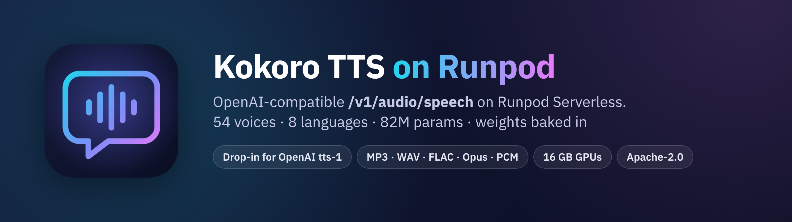

Kokoro TTS — Runpod Serverless worker (OpenAI-compatible)
Kokoro-82M text-to-speech on Runpod Serverless with an OpenAI-compatible /v1/audio/speech API. 54 voices in 8 languages, cheap 16 GB GPUs, model weights baked into the image. A self-hosted alternative to OpenAI tts-1.
Deploy on Runpod HubGitHub repositoryREADMEllms.txtopenapi.yamlAGENTS.mdReleases
Quick start
curl -s https://api.runpod.ai/v2/$ENDPOINT_ID/runsync \
-H "Authorization: Bearer $RUNPOD_API_KEY" -H "Content-Type: application/json" \
-d '{"input": {"input": "Hello from Kokoro!", "voice": "af_heart", "response_format": "mp3"}}' \
| jq -r .output.audio_base64 | base64 -d > speech.mp3- Measured on an RTX 4090 (23 Nov 2026): 0.115 s inference for 2.4 s of MP3 audio; first cold start 144 s including the 6.6 GB image pull.
- HTTP mode (WORKER_MODE=http) works with the official OpenAI SDK: base_url https://<ENDPOINT_ID>.api.runpod.ai/v1
- Formats: mp3, wav, flac, opus, pcm. Weighted voice blends such as af_bella(2)+af_sky(1).
Full documentation: README on GitHub. License: Apache-2.0. The Hub listing link works after Runpod's review.